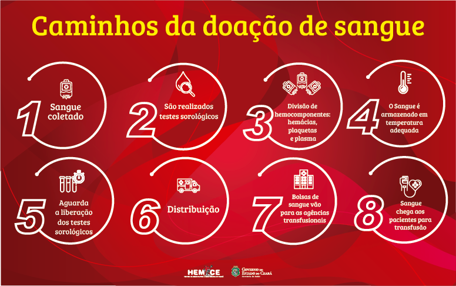
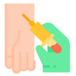
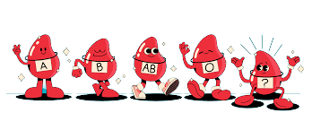

lei Doação
LEI No 10.205, DE 21 DE MARÇO DE 2001. Regulamenta o § 4o do art.º. 199 da Constituição Federal, relativo à coleta, processamento, estocagem, distribuição e aplicação do sangue, seus componentes e derivados, estabelece o ordenamento institucional indispensável à execução adequada dessas atividades, e dá outras providências.
Doadores
A coleta de sangue é totalmente segura, sendo utilizada uma agulha estéril, de uso único e descartável, para coletar cerca de 450ml de sangue e amostras para a realização de exames obrigatórios por lei. Após a doação, o doador recebe um lanche e um suco, que deverão ser consumidos na Cantina do posto de coleta.
Riscos
O procedimento para doação de sangue é simples, rápido e totalmente seguro. Não há riscos para o doador, porque nenhum material usado na coleta do sangue é reutilizado, o que elimina qualquer possibilidade de contaminação.
Impedimentos Temporarios
• Período gestacional;
• Período pós-gravidez: 90 dias para parto normal e 180 dias para cesariana;
• Amamentação: até 12 meses após o parto;
• Ingestão de bebida alcoólica nas 12 horas que antecedem a doação;
• Tatuagem e/ou piercing nos últimos 12 meses (piercing em cavidade oral ou região genital impedem a doação);
• Extração dentária: 72 horas;
Mas para onde vai esse Sangue?
Quem recebe 
A doação de sangue é um gesto solidário de doar uma pequena quantidade do próprio sangue para salvar a vida de pessoas que se submetem a tratamentos e intervenções médicas de grande porte e complexidade, como transfusões, transplantes, procedimentos oncológicos e cirurgias. Além de pessoas que submetem a procedimentos e intervenções médicas, o sangue também é indispensável para que pacientes com doenças crônicas graves - como Doença Falciforme e Talassemia - possam viver por mais tempo e com mais qualidade, além de ser de vital importância para tratar feridos em situações de emergência ou calamidades.
O que é utilizado do sangue
O sangue doado é fracionado para envio aos hospitais e pacientes que estejam necessitando. O sangue é fracionado em 4 hemocomponentes principais: Concentrado de hemácias (CHM) – é a parte vermelha do sangue que contém as hemácias, células sanguíneas, responsáveis pelo transporte do oxigênio para todo o corpo humano.
Transplante artificial
Já pensou em sangue feito por inteligência artificial? Pesquisadores da Faculdade de Medicina da Defesa Nacional do Japão desenvolveram um sangue artificial que pode funcionar para todos os tipos sanguíneos e ser solução para transfusões. De acordo com o relatório publicado pelos pesquisadores, a novidade poderia aumentar consideravelmente as chances de sobrevivência de pessoas que passaram por ferimentos graves.
Tipos de Sangue
Tipo A e B
Sangue A: é um dos tipos mais comuns e contém anticorpos contra o tipo B, também chamado de anti-B, só podendo receber sangue de pessoas do tipo A ou O;
Sangue B: é um dos tipos mais raros e contém anticorpos contra o tipo A, também chamado de anti-A, só podendo receber sangue de pessoas do tipo B ou O;
Tipo AB
Sangue AB: é um dos tipos mais raros e não possui anticorpos contra A ou B, o que significa que pode receber sangue de todos os tipos sem que haja reação;
Tipo O
Sangue O: é conhecido como o doador universal e é um dos tipos mais comum, possui anticorpos anti-A e anti-B, só podendo receber sangue de pessoas do tipo O, caso contrário pode a aglutinação das hemácias.